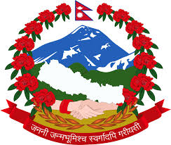

| Contents | Article | Talk | Read | View Source | View History | Tools | Appearance | |
| (Top) Etymology HistoryHistoryAncient NepalMedieval Nepal Unification, expansion and consolidation (1768–1951) Contemporary history Politics and governmentPoliticsGovernment Administrative divisions Laws and law enforcement Foreign relations Military and intelligenceEconomy historyepal,[a] officially the Federal Democratic Republic of Nepal,[b] is a landlocked country in South Asia. It is mainly situated in the Himalayas, but also includes parts of the Indo-Gangetic Plain. It borders the Tibet Autonomous Region of China to the north, and India to the south, east, and west, while it is narrowly separated from Bangladesh by the Siliguri Corridor, and from Bhutan by the Indian state of Sikkim. Nepal has a diverse geography, including fertil |
From Wikipedia, the free encyclopedia | Coordinates: 28°10′N 84°15′E | Text | |||||
| Nepal,[a] officially the Federal Democratic Republic of Nepal,[b] is a landlocked country in South Asia. It is mainly situated in the Himalayas, but also includes parts of the Indo-Gangetic Plain. It borders the Tibet Autonomous Region of China to the north, and India to the south, east, and west, while it is narrowly separated from Bangladesh by the Siliguri Corridor, and from Bhutan by the Indian state of Sikkim. Nepal has a diverse geography, including fertile plains, subalpine forested hills, and eight of the world's ten tallest mountains, including Mount Everest, the highest point on Earth. Kathmandu is the nation's capital and the largest city. Nepal is a multi-ethnic, multi-lingual, multi-religious, and multi-cultural state, with Nepali as the official language. The name "Nepal" is first recorded in texts from the Vedic period of the Indian subcontinent, the era in ancient Nepal when Hinduism was founded, the predominant religion of the country. In the middle of the first millennium BC, Gautama Buddha, the founder of Buddhism, was born in Lumbini in southern Nepal. Parts of northern Nepal were intertwined with the culture of Tibet. The centrally located Kathmandu Valley is intertwined with the culture of Indo-Aryans, and was the seat of the prosperous Newar confederacy known as Nepal Mandala. The Himalayan branch of the ancient Silk Road was dominated by the valley's traders. The cosmopolitan region developed distinct traditional art and architecture. By the 18th century, the Gorkha Kingdom achieved the unification of Nepal. The Shah dynasty established the Kingdom of Nepal and later formed an alliance with the British Empire, under its Rana dynasty of premiers. The country was never colonised but served as a buffer state between Imperial China and British India. Parliamentary democracy was introduced in 1951 but was twice suspended by Nepalese monarchs, in 1960 and 2005. The Nepalese Civil War in the 1990s and early 2000s resulted in the establishment of a secular republic in 2008, ending the world's last Hindu monarchy. The Constitution of Nepal, adopted in 2015, affirms the country as a federal parliamentary republic divided into seven provinces. Nepal was admitted to the United Nations in 1955, and friendship treaties were signed with India in 1950 and China in 1960. Nepal hosts the permanent secretariat of the South Asian Association for Regional Cooperation (SAARC), of which it is a founding member. Nepal is also a member of the Non-Aligned Movement and the Bay of Bengal Initiative. | सङ्घीय लोकतान्त्रिक गणतन्त्र नेपाल (Nepali) Saṅghīya Lokatāntrika Gaṇatantra Nepāla |
|||||||
|  | ||||||||